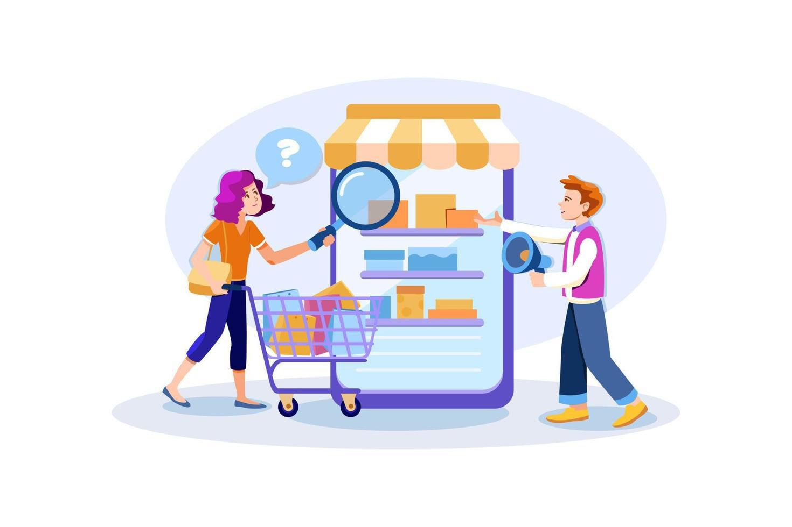

O primeiro passo para promover o crescimento do negócio a partir do marketing é um planejamento bem
realizado. Nele precisam ser definidos a segmentação de mercado, o posicionamento que a empresa adotará, os
objetivos a serem alcançados, o investimento a ser feito e os responsáveis por cada etapa dos processos.
É fundamental para um negócio estudar o dia a dia e o comportamento do seu público-alvo, bem como a sua
relação com a alimentação. Dessa forma, é possível saber como se comunicar com ele e quais qualidades dos
seus produtos devem ser destacadas nas ações de marketing. Podem ser realizadas pesquisas sobre a
etnografia, jornadas do consumidor e testes de conceitos.
Promover ações no ponto de venda é essencial, os revendedores e clientes precisam conhecer seus produtos e
confiar na sua marca para decidir se vão ou não a escolher. Para isso, existem algumas ações que ajudam a
melhorar a experiência deles, criar confiança e fechar negócio. A ação de degustação, por exemplo, explora o
sensorial da pessoa, criando uma conexão com ela. Já o marketing de experimentação mostra os produtos a
partir de amostras grátis, brindes ou oferecendo um test drive — sendo uma ótima estratégia para empresas
que estão se lançando no mercado.

Dê suporte a sua venda
Entenda quem são seus diferentes públicos. Essa é uma dica valiosa de marketing para indústria alimentícia e
que deve ser usada tanto para as estratégias offline como online. Ao contrário do varejo, a indústria tem
uma diversidade de públicos com a qual dialoga – e cada um deles têm suas próprias características.
Crie um posicionamento digital. Depois de entender melhor cada um dos seus públicos, é essencial montar uma
boa estratégia digital, pois tanto os seus distribuidores como seu consumidor final estão na internet.
O site institucional é indispensável, contando com informações que dialoguem com todos os seus públicos,
apresentando a sua marca, história, portfólio de produtos, diferenciais e outras características
importantes. Além disso, as redes sociais, o blog corporativo e outras mídias devem ser usadas.
Crie estratégias baseadas em dados. Estamos na era dos dados, principalmente com tantas tecnologias à nossa
disposição. Na indústria 4.0, isso já é uma realidade – e no marketing não é diferente. Se você consegue
automatizar sua produção e receber dados em tempo real das suas máquinas e linhas de produção, também
consegue ter acesso aos dados dos seus públicos de interesse, criando estratégias mais acertadas.
Integre on e offline. A abordagem omnichannel é uma tendência muito forte e que está de acordo com o novo
perfil dos consumidores. Criar experiências e ações que combinem a interação on e offline é um dos desafios
mais importantes para inúmeros setores atualmente, e também é para a indústria alimentícia.
Por exemplo: é possível criar uma campanha digital para incentivar os consumidores a descobrirem o novo
sabor de uma linha de produtos que você vende, fazendo com que eles compartilhem a ideia usando determinada
hashtag. O ganhador poderá receber uma quantidade do novo produto ou outro prêmio. Essa campanha aumentará a
propaganda boca a boca, ajudará a posicionar a marca e ainda criará um “buzz” espontâneo e positivo entre os
diferentes públicos.
Dicas
Identidade visual: Seja visto, invista na imagem de sua empresa como logo em sacolas, embalagem, brindes,
postagens virtuais etc. É importante ter o nome citado em eventos como feiras expositoras.
Qualidade: Preze uma relação de transparência com o seu cliente, ofereça preço, prazo ou qualidade, é
importante agir a partir do que ele procura, mesmo que haja pontos negativos nessa escolha, deixe ciência de
suas consequências.
Pós-venda: É importante estabelecer uma relação com seu cliente, saber se o produto fornecido atendeu as
necessidades procuradas por ele, isso ajuda na coleta de feedbacks, que se torna muito importante para a
evolução de sua empresa.